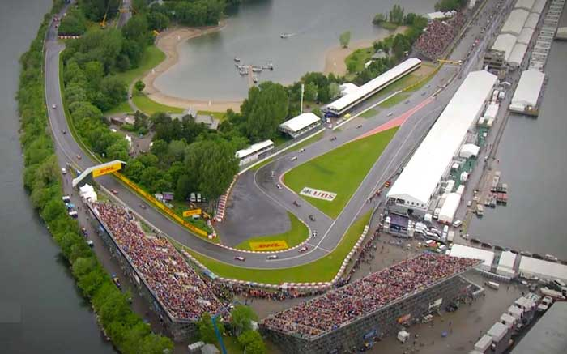
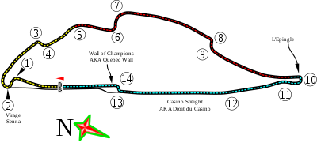

NAVEGUE
Home
Pilotos
Calendário/Tabela
Grand Prix
Construtoras
Últimas Notícias
GP do Canadá
SOBRE
A pista do Canadá, também conhecida como Circuito Gilles Villeneuve, é um circuito de corrida localizado na cidade de Montreal, no Canadá. Foi inaugurada em 1978 e tem 4,361 km de extensão, com 14 curvas. A pista é conhecida por ser uma das mais desafiadoras do calendário da Fórmula 1, com retas longas e curvas estreitas que exigem habilidade e precisão dos pilotos. Além disso, a pista tem uma das curvas mais famosas da Fórmula 1, a "Wall of Champions", que já causou muitos acidentes e surpresas ao longo dos anos. A primeira corrida da Fórmula 1 na pista do Canadá aconteceu em 1978 e desde então tem sido um dos destaques do calendário da categoria.
Circuitos Utilizados
Gilles Villeneuve

INFORMAÇÕES DA CORRIDA

Localização
Montreal, Quebec, Canadá
Voltas
70
Percurso
4.361 km
Total
305.270 km
Curvas
13
Pole
Sebastian Vettel
Anos Disputados
57
Última Disputa
2022
Maior vencedor
Michael Schumacher
Última Corrida - Pódio
Max Verstappen